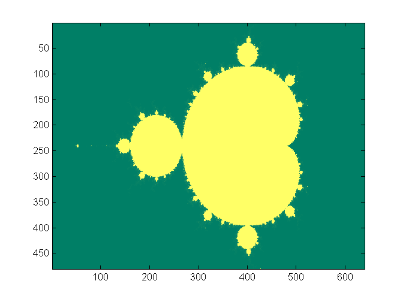

ECE 5760: Laboratory 4
Mandelbrot set visualization.
Introduction.
In this assignment you will implement a system to compute and draw the Mandelbrot
set, and to zoom in on pieces of the set. A matlab program shows
how the computation is done. Note that the numbers are all complex. The image
below is from the program output. The x,y axis units are pixels, not natural
units. The x axis range is [-2,1] and the y axis [-1,1]. Former TA, Shiva Rajagopal, found a video for Mandelbrot Set made by Cornell students! https://www.youtube.com/watch?v=ES-yKOYaXq0 Lyrics: http://www.jonathancoulton.com/wiki/Mandelbrot_Set/Lyrics

Procedures:
- There may be one or more HPS to control computation, set parameters, and solve the system.
Baseline perfromance that you must beat is my best single-processor HPS code.
Read the University computer page, Mandelbrot example.
- If you use HPS to do the calcuations, you may use floating point, but fixed point is about twice the speed.
Can you figure out how to turn on the NEON vector processor? NEON could give another factor of two.
Using both processors may also speed up calculation, but custor hardware will almost surely be faster.
- You will probably use additional custom bus-master hardware to compute
the image. The computation of a 640x480 image is compute intensive, so you
are going to want to implement multiple computational units to speed up the
process. Spend some time considering load balancing since some regions of the
complex plane are much faster to compute than others. Initial testing suggests that you can calculate and display the mandebrot set approximately 30 times faster on FPGA hardware, than on the HPS.
- If you use custom hardware, I suggest using 4.23 fixed point notation for
interating the quadratic
complex number calculation. The top bit will be the usual 2's comp sign bit.
The 4.23 notation means that a single DSP unit can do one multiply. This format give the numbers a dynamic range of +/-7. A matlab
program to check the effect
of limiting the range shows that the computation works..
Check point
In the first lab section demo a simulation of one complex iterator pipeline.
The number of iterations required should match the equivalent matlab point in the complex plane for at least two points.
Examples from class:
- Skyler Schneider 1, 2, 3, 4
- Venkatesh Santhanagopalan and Rick Wong 1, 2, 3
- Jinda Cui and Jiawei Yang, Full set.;
Satellite double spiral: x_mid=-0.743 643 900 055; y_mid=0.131 825 890 901; zoom level=3000;
neural network: range mode: x=(-0.37432239 -0.373655726 ); y=(0.65938433 0.66005100); zoom mode: x_mid=-0.37398906; y_mid=0.65971767; zoom level=3000;
devil's eye: range mode: x=(-1.87 -1.85); y=(-0.01 0.01); zoom mode: x_mid=-1.86; y_mid=0; zoom level=100;
alien's egg: range mode: x=(-1.863 -1.85); y=(-0.00153846 0.00153846); zoom mode: x_mid=-1.8615; y_mid=0; zoom level=650;
lava: range mode: x=(-1.38 -1.36);y=(-0.026 -0.006); zoom mode: x_mid=-1.37; y_mid=-0.016; zoom level=100;
- Sandeep Gangundi and Sion Wang 600x_zoom
image name |
x coord |
y coord |
flower |
[-0.37465401, -0.37332411] |
[0.659227668, 0.66020767] |
asymmetric mandelbrot |
[0.435396403, 0.451687191] |
[0.367981352, 0.380210061] |
pattern |
[-0.758,-0.75] |
[0.05,0.06] |
spiral |
[-0.403, -0.399] |
[-0.600, -0.603] |
- Mohammad Saifee Dohadwala
| name |
complex cood x |
complex cood y |
| SPIRAL |
x = [-1.339301 , -1.336371] |
y = [-0.060742 , 0.058789] |
| INVERTED MANDELBROT |
x = [0.385683 , 0.388613] |
y = [-0.268013 , -0.266060] |
| Spiral 2 |
x = [0.379813 , 0.381278] |
y = [-0.275228 , -0.274251] |
| STARFISH |
x = [-0.670565, -0.669833] |
y = [-0.458300, -0.457812] |
Other links
Assignment
- You may use HPS, but you do not have to.
- The corners of the region being plotted should be displayed either on the VGA screen, on a serial console, or on the LCD display.
- Upon pressing KEY3, the system should compute and display the full Mandelbrot
set,
as shown above.
- The VGA graphics interface should run the VGA at 640x480 resolution with 8-bit color per pixel. Colors may aid in
debugging and certainly look cool. You may want to map color to the number of iterations
to divergence, or to the log of that number. A reasonable approximation of
the log is to just use the position of the largest non-zero bit in the count
(in matlab
fix(log2(count)).
A modified matlab
program and image show the effect
of log-compressing the numerical range.
The zoomed image (see below) also
shows different detail.
- There will be a zoom interface using serial communication
to a terminal or a mouse interface. It is sufficient to pick a center coordinate and zoom in/out by a factor of two.
When you trigger the zoom calculation, the specified
corners should be reassigned to the corners of the display and 640x480 new points in those intervals should be iterated
again.
- Part of your grade
will depend upon how fast you can render the full 640x480 set and two other regions picked on demo day. The
elapsed time in seconds and fractions of a second to draw should be shown on the VGA screen.
If your system only runs at about the same speed as my example code, you will get a zero for the demo part of the lab grade.
- You should be able
to choose the maximum number of iterations using serial input the HPS, or toggle switches,
or however you want to do it.
Be prepared to demo your design to your TA in lab.
Your written lab report should include the sections mentioned in the policy page, and :
- A table of times to compute various regions of the Mandelbrot set close
to the areas specified in the list.
x=[-2 1], y=[-1 1] x=[-0.758,-0.75], y=[0.05,0.06]x=[-1.45, -1.3], y=[-0.07, 0.07]
- A collection of photographs of your favorite regions, and their coordinates.
The camera should be good enough to resolve individual pixels.
- A detailed dsecription of your Qsys design.
- A heavily commented listing of your Verilog design (if you use FPGA) and GCC code (if you use HPS).
Copyright Cornell University April 21, 2017
{kind=link}
{kind=link}
{kind=link}
{kind=link}
.jpg){kind=link}
.jpg){kind=link}
.jpg){kind=link}
{kind=link}
{kind=link}
{kind=link}
{kind=link}
{kind=link}
{kind=link}
{kind=link}
{kind=link}
{kind=link}
{kind=link}
{kind=link}
{kind=link}
{kind=link}
{kind=link}
{kind=link}
{kind=link}
{kind=link}